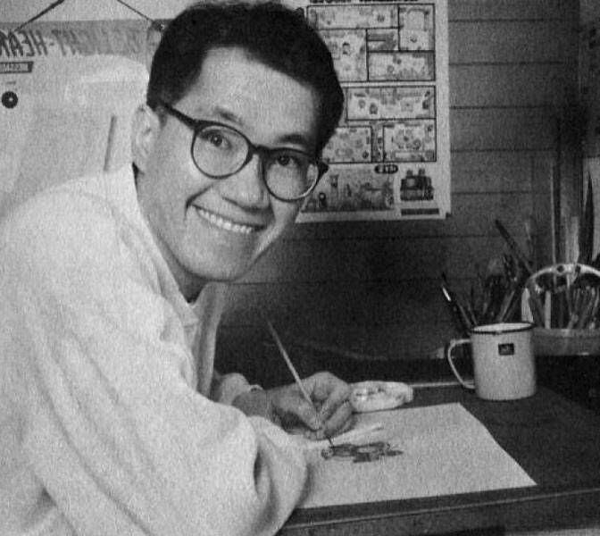

Akira Toriyama (1955-2024)

Akira Toriyama drawing manga.
Akira Toriyama was born on April 5, 1955 and was a world famous Japanese manga artist. His most famous manga was Dragonball, serialized in Weekly Shonen Jump from 1984 ot 1995 and sold over 100 million copies worldwide. The success of Dragonball made him one of the most popular manga artists in the world, and his work inspired many other manga artists and creators.
For more information on Akira Toriyama's life and career, please visit his Wikipedia entry.